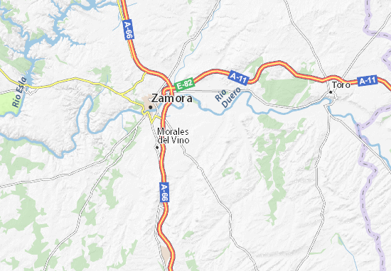

Indice de la pagina | ||
|---|---|---|
| Historia | ||
| Localizacion | ||
| Patrimonio | ||
| Fiestas | ||
| Pagina Principal | ||
Moraleja del VinoHistoriaDurante la Edad Media la localidad de Moraleja del Vino quedó integrada en el Reino de León, siendo repoblada. Posteriormente, en la Edad Moderna, Moraleja formó parte del Partido del Vino de la provincia de Zamora, tal y como reflejaba en 1773 Tomás López en Mapa de la Provincia de Zamora. Así, al reestructurarse las provincias y crearse las actuales en 1833, la localidad se mantuvo en la provincia zamorana, dentro de la Región Leonesa, integrándose en 1834 en el Partido Judicial de Zamora. Localizacion PatrimonioDestaca en la localidad la iglesia parroquial de Santa María Magdalena, de estilo renacentista, con la nave central datada en el XVI, mientras las laterales se añadieron a finales del XVIII. Dispone de arcos torales que sostienen la cúpula mientras el retablo mayor es grande, barroco y en tonalidad madera. Estuvo rematado con las imágenes de San José y la Magdalena, aunque esta última se encuentra ahora en la sacristía. Dos retablos laterales —también barrocos— y dos cornucopias pequeñas guardadas en la sacristía, se unen a la conservación de dos casullas bordadas de finales del siglo XV. Además de algunas casas señoriales repartidas por el casco del pueblo y varios ejemplos de arquitectura tradicional en adobe, en el cementerio hay una ermita del siglo XIX, que aloja en el interior un interesante crucifijo del XVI.FiestasA finales del mes de julio —en torno al 22— se celebran las fiestas patronales de la Magdalena, con un programa intenso que incluye el 25 de julio, con lo que se festeja también Santiago Apóstol. Son días de gran oferta de actividades que compatibilizan juegos infantiles, tradicionales o de mesa, torneos deportivos, conciertos musicales, actividades folklóricas, espectáculos taurinos, así como verbenas y degustaciones gastronómicas populares de gran afluencia. A lo largo del año se mantienen también las tradicionales fiestas de quintos (cuando se planta el mayo), las de águedas y candelas, así como el carnaval, o una semana cultural que suele organizarse en agosto coincidiendo con la masiva presencia de emigrantes. |